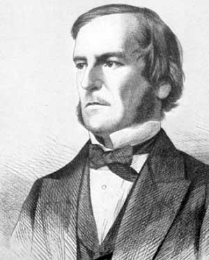
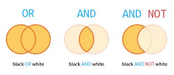
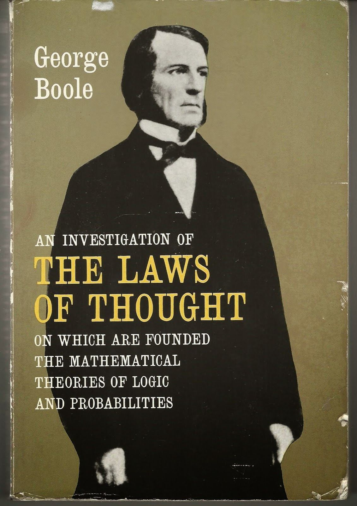

George Boole
About

George Boole, born November 1815 – 8 December 1864) was a largely self-taught English mathematician, philosopher and logician, most of whose short career was spent as the first professor of mathematics at Queen's College, Cork in Ireland.
He worked in the fields of differential equations and algebraic logic, and is best known as the author of The Laws of Thought (1854) which contains Boolean algebra. Boolean logic is credited with laying the foundations for the information age.
Boolean Logic

His system of Boolean Logic paved the way for modern electrical engineering and computer science. Boole created a system, known as Boolean Logic, where all mathematical variables could only boil down to two variables - “true” or “false” or “on” and “off”.
These ideas were put to use more than 70 years after his death when Victor Shestakov at Moscow State University in Russia proposed using the system to design electrical switches, according to the Scientific American.This simple “on-off” system later went on to form the bedrock of all computer code.
His Legacy

Boole is the namesake of the branch of algebra known as Boolean algebra, as well as the namesake of the lunar crater Boole. The keyword Bool represents a Boolean datatype in many programming languages, though Pascal and Java, among others, both use the full name Boolean.The library, underground lecture theatre complex and the Boole Centre for Research in Informatics at University College Cork are named in his honour. A road called Boole Heights in Bracknell, Berkshire is named after him.